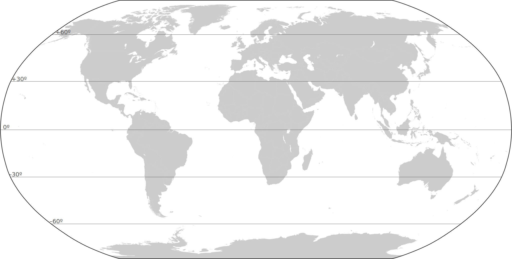
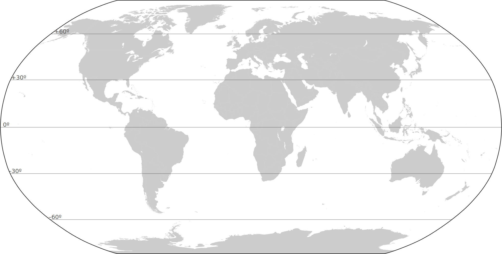
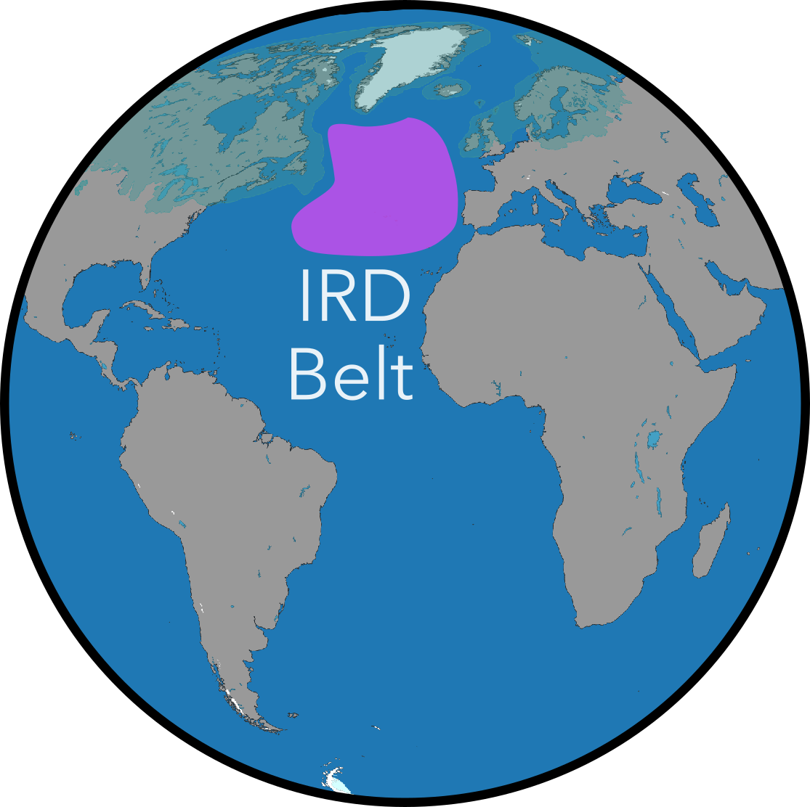
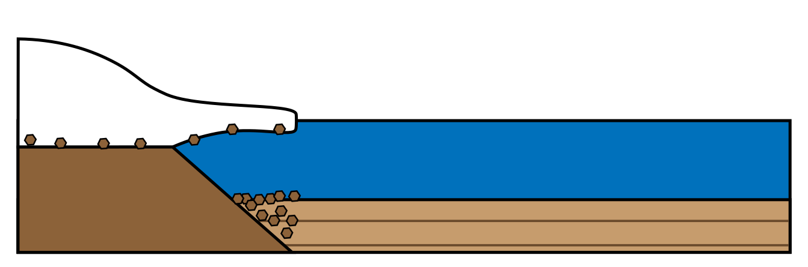
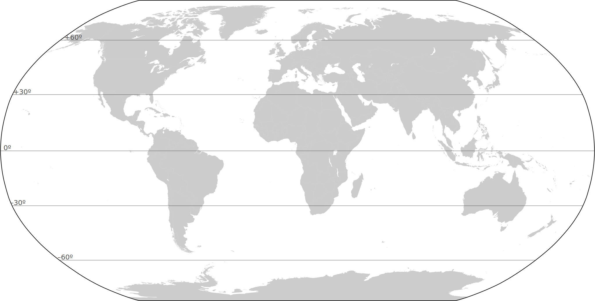
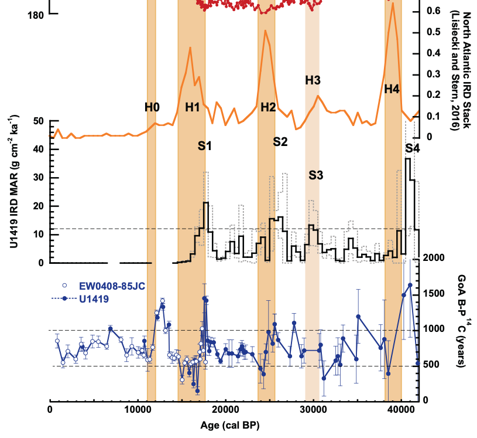
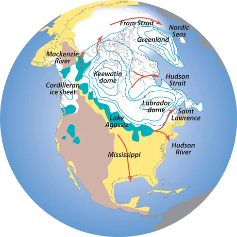
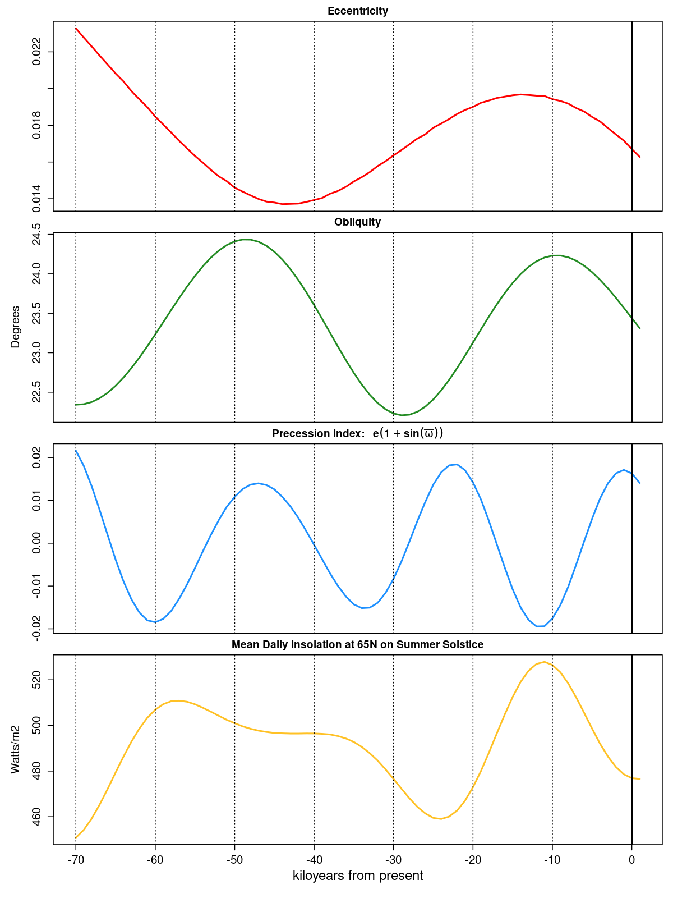

The Quaternary
Week
GEOS 3410
Week Schedule
Tuesday
- Wrap-up PETM, Cenozoic cooling
- Pleistocene glacial-interaglacials
- Zine Project!
Thursday
- Maritime ice
- Millenial scale variability
- Ice sheets, oceans, teleconnections
Outside of class
- Week reading
- Zine project [Dec. 6]
- Term paper [Nov. 22]
Deep Time Time:
PETM
(Weeks 10-11)The Quaternary Period
2.58 Ma to present
The Quaternary Period
| Pleistocene epoch | 2580 – 11.7 ka |
|---|---|
| Holocene epoch | 11.7 ka – present |
The Quaternary Period
What are cyclic (repeating) and secular (long-term) changes?

Data: Lisiecki+Raymo 2004
Zooming out over the Plio-Pleistocene

As temperatures cool and ice sheets grow progressively larger (on average)… climate change amplitudes increased over Quaternary.


What is a zine (


December 9
SanAntoZineFest.com
Cyosphere Flashback:
(Week 9)


"Internal" ice sheet forcing

"External" climate forcing
 (You don't need to know diagram)
(You don't need to know diagram)


 

The Last Glacial Termination:


Why?
Data: Lisiecki+Raymo 2004
Orbital cycles
Obliquity
41 kyr period
Axial Precession
∼26 kyr period
Eccentricity
∼100 kyr period
Solar forcing at 65°N on the summer solstice
Can orbital cycles account for increasing amplitude of climate change?
No secular change. So what is changing? Climate sensitivity via ↓ CO2
Glacial-interglacial pacing
Data: Lisiecki+Raymo 2004
- Measure the distance between adjacent extrema (peak-peak, trough-trough)…
- Before 1500 ka
- After 500 ka
- Use the x-axis ticks to convert your measurements to time.
- Interpret your results. What is going on?
Mid-Pleistocene Transition
Between 1200 and 700 ka shift from ∼41 kyr cycle to ∼100 kyr cycle
| Glacial/Interglacial Period | Climate system sensitive to… |
|---|---|
| ∼41 kyr | Obliquity |
| ∼100 kyr | 4× Precession |
Internal climate system forcings maintain glacial conditions through several cycles until it hits a tipping point (threshold)
Zine Project
What is a zine (zeen
)?
- DIY, low tech, inexpensively produced
- Often published and distributed by authors/artists themselves
- Anti-commercial, often rebellious/anti-establishment
- About a wide range of subjects: poetry, politics, music, scifi, fandom …
- Accessible to everyone — free or cheap and readily available
Adapted from slides by Sarah Marcella Parella
Pamphleteering could be considered an early form of zinemaking
Adapted from slides by Sarah Marcella Parella
Zines started in the early/mid 20th century as fanzines
The Reign of the Superman
January 1933 by Jerry Siegel and Joe Shuster
The Comet
Chicago in 1930 by Raymond Arthur Palmer and the Science Correspondence Club
Adapted from slides by Sarah Marcella Parella
Zines exploded with Punk in the 1970s
Adapted from slides by Sarah Marcella Parella
Activist zines took off with feminist zines and continue with other activist movements
Adapted from slides by Sarah Marcella Parella
Folks make zines about EVERYTHING from humor to politics to science!
Adapted from slides by Sarah Marcella Parella
Folding a 6-page fold-up zine
Assignment
Design and create a 6-page zine describing an aspect of Earth's climate system, climate history, and/or climate science techniques.
Create an accessible, digestible mini-publication to breakdown and explain a complex issue to a non-scientist.
Due: 5pm | December 6
Format
- Front cover — title and author name(s)
- Interior pages (6) —scientific content in text, images, and diagrams
- Back cover — references for all images and literature
- (Optional) a large image, diagram, or map within folds
Content
You have a lot of flexibility for your zine topic, but I expect you to engage with it at a depth and level appropriate to this class …
…If you have are unsure if your topic will satisfy the requirements of the project, I am more than happy to discuss during drop-in hours or provide feedback on a topic proposal
References
Your zine must incorporate at least three (≥3) primary resources. These must be reputable sources that adhere to the publishing practices of their fields (e.g. peer-review for scientific articles).
Abbreviated reference style
AuthorName(+), Year. Abbreviated Publication, doi:...
Edwards+ 2022. Sci Adv, doi:10.1126/sciadv.abp9329
Edwards+ 2022. Sci Adv, doi:10.1126/sciadv.abp9329
Collaboration
You may work with a partner if you choose.
If you work with a partner, please include a brief “Author Contributions” section either on the back cover of your zine or as a supplemental document.
Proposal
A short (<150 word) description of your zine idea. I will make every effort to provide feedback on your proposal within 72 hours.
Due: 11:59 pm 20 Nov
Many ways to make a zine!
Some rad zine resources for help/inspiration
Art Cart in Coates Library
San Antonio Zine Fest
December 9
10am – 4:30 pm
Central Library
600 Soledad St, San Antonio, TX 78205SanAntoZineFest.com
Cyosphere Flashback:
Big Ice
(Week 9)Climate change of the last glacial period
Millenial-scale climate change over Greenland
What's going on here?
Dansgaard-Oeschger (DO) Events
Warm interstadials and cool stadials every few kyr
North Atlantic sediment cores
Ice-rafted debris (IRD) in North Atlantic sediment cores

“IRD belt”

Heinrich Events
Pulses of IRD (detrital sed.) during some (but not all) stadials
Core EW9302-2JPC
Ice-rafted debris
… carried far out into the deep ocean by a large iceberg → ice shelf origins

Heinrich events

Few icebergs
Coarse, "lithic" sediment deposited beneath ice shelf.Many icebergs
Carry IRD into deep ocean. Each layer corresponds to a calving event.IRD ← icebergs ← ice shelves ← ice streams
Ice streams of the Laurentide Ice Sheet (LIS)
Ice streams of the Laurentide Ice Sheet (LIS)
Sites of major ice streams are deep bays and lakes today (an interglacial)
Ice streams of the Laurentide Ice Sheet (LIS)
Hudson Strait Ice Stream
- Largest ice stream of LIS
- Located in Labrador Sea → North Atlantic
- Overlays carbonate rock & carbonate IRD most common in Heinrich event layers
Activating an ice stream
Requires:
- Intermittent ice stream activation/acceleration
- Dormant for 5–7 kyr
How can we speed up ice flow?
Activating a large ice stream
Option 1: enlarge/expel
"Internal" ice sheet forcing
Option 2: subsurface ocean warmth
"External" climate forcing
Overall consensus: climate forcing (#2)
(You don't need to know diagram)
- The variability in Heinrich event timing (5–7+ kyr) supports an "external" influence
- Other maritime ice streams also accelerate during HEs
- BUT, ice requires time to thicken → sensitive to climate.
The DO-HE Process
DO interstadial
DO stadial
Heinrich stadial
Heinrich stadial → interstadial
Escape from the North Atlantic!
Antarctic Isotope Maxima (AIMs)
NGRIP = Greenland | WDC = West Antarctica | ATS= Antarctic Temp.
Antarctic ice δ18O rises during stadials, when Greenland δ18O is low.
Polar See-saw
Brought to you by Thermohaline Circulation
Wikipedia: Thermohaline circulation
Stadials
- cooler/cooling N. Atlantic
- more meltwater/sea ice
- weaker Gulf stream
- warmer/warming S. Ocean
Hulu Cave, China
Speleothems — stalagmites, stalactites

Rainwater-fed cave, CaCO3 in drip waters…
Where does that O come from???
Hulu cave speleothems
Changes in East Asian Monsoon
GISP2 = Greenland ice sheetSiku Events — IRD in North Pacfic
Siku Events — IRD in North Pacfic
| H# | Heinrich events |
|---|---|
| S# | Siku events |
| ··· | Radiocarbon age of N Pacific water |
What is going on here?
Putting it all together
WHAT IS GOING ON HERE?
The Last Glacial Termination:
All good things come to an end
The Northern (Atlantic) Perspective
Last Glacial Maximum (LGM): 20–26 ka
The Bølling-Allerod (B-A) Interstadial
~15–13 ka: Final interstadial after prolonged, gradually warming stadial
Earth system still acting like it's a glacial period
The Younger Dryas
Mountain avens (Dryas octopetala) thrives in cold, alpine-Arctic climates

_2.jpg){kind=link}
↑↑ Dryas pollen in pond/lake cores 12.9–11.7 ka → cooling

The Younger Dryas
Last Glacial Maximum ice margin
Context
- Ice sheet margin retreat
- B-A interstadial warmth
- Global sea levels rose by 40 m during B-A
←How is this map changing?
The Younger Dryas

Ice/moraine-dammed lakes
Meltwater drainage
Freshwater → N Atlantic
Outburst flood → rapid N Atl freshening → slows THC
After the Younger Dryas
How has the system changed?
Inter-hemispheric perspective
Inter-hemispheric perspective
The Younger Dryas — globally
Jun, Jul, Aug
↓ rainfall ↑
Dec, Jan, Feb
Reflections: ending a glacial

LGM: 20–26 ka
- Orbital forcing 70–0 ka
- Eccentricity
- Obliquity
- Precession
- Insolation
Next Week ()
- Week reading
- Tues/Thurs:
- Deglaciation → Holocene
- Environmental responses to climate change
- Climate zine proposal due 20 Nov on Canvas
- Term paper [Nov. 22]